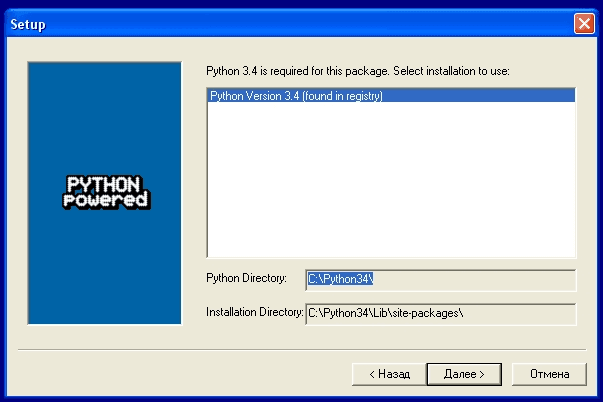
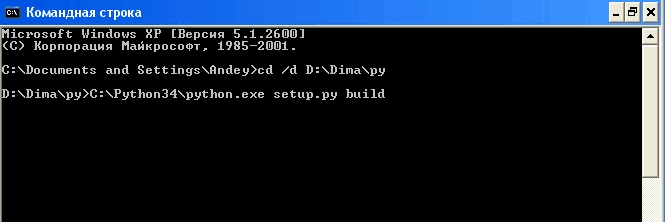
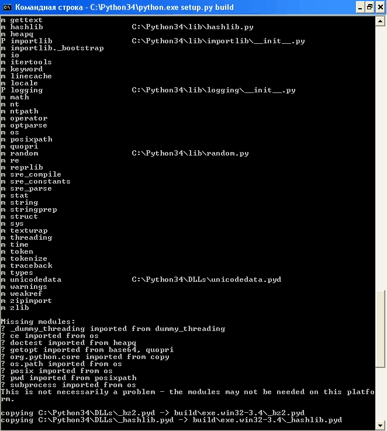
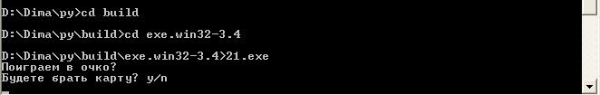

Наверняка, у каждого Python-программиста возникало непреодолимое желание, а изредка и реальная потребность, скомпилировать свою программу на python в exe файл. Сегодня я расскажу, как это сделать с помощью программы cx_Freeze.
Вопрос 1: а оно надо?
Прежде, чем начинать компилировать программу, нужно убедиться, что это действительно необходимо.
"Компиляция" программы на python - процесс, который может сопровождаться множеством проблем. Более того, это не компиляция в машинный код, как, например, программы на C, а лишь "сборка" в исполняемый файл вашей программы вместе с частью интерпретатора python.
Поэтому, если вы будете использовать программу сами или на компьютерах тех, кто её будет использовать, будет стоять интерпретатор python, то вам не нужно её компилировать.
Установка cx_Freeze
Если компилировать программу на python всё-таки нужно, то скачиваем cx_Freeze с http://www.lfd.uci.edu/~gohlke/pythonlibs/#cx_freeze (так как в ней нет одного неприятного бага, который есть в официальной версии).
Затем устанавливаем, не забывая правильно выбрать директорию, где расположен python.

Компиляция
Компилировать будем программу "блэкджек" (файл 21.py) (кому лень смотреть, привожу полный исходный код).
import random
random.shuffle(koloda)
print('Поиграем в очко?')
count = 0
while True:
choice = input('Будете брать карту? y/n\n')
if choice == 'y':
current = koloda.pop()
print('Вам попалась карта достоинством %d' %current)
count += current
if count > 21:
print('Извините, но вы проиграли')
break
elif count == 21:
print('Поздравляю, вы набрали 21!')
break
else:
print('У вас %d очков.' %count)
elif choice == 'n':
print('У вас %d очков и вы закончили игру.' %count)
break
print('До новых встреч!')
Создаём в папке с программой файл setup.py с содержимым:
from cx_Freeze import setup, Executable
setup(
name = "21",
version = "0.1",
description = "Blackjack",
executables = [Executable("21.py")]
)
Переходим в командную строку (обычно Пуск → Стандартные → Командная строка). Переходим в папку с программой (в моём случае D:\Dima\py). Запускаем команду C:\Python34\python.exe setup.py build (вместо C:\Python34 нужно написать папку, куда установлен python).

Начнется процесс сборки, в котором cx_Freeze может выдавать предупреждения, но, скорее всего, они не повлияют на работу программы.

Поздравляю! В папке build теперь есть ваша папка с исполняемым файлом!

Заметьте, не файл, а папка! Все остальные файлы также нужны для работы программы (да, это недостаток cx_Freeze). К тому же, при завершении программы окно сразу закрывается (а не ждет нажатия клавиши), поэтому в конец программы нужно дописать что-то вроде:
input("Press Enter")
И скомпилировать ещё раз.
Также можно создать msi-архив командой C:\Python34\python.exe setup.py bdist_msi.
Разумеется, при компиляции более сложных программ вы можете столкнуться с более сложными проблемами.
Для их решения следует воспользоваться официальной документацией.